七大计算机视觉项目总览
从目标检测到生成模型、从关键点回归到检索排序，再到可演示的 Web 监管系统——每个项目的定位、实现功能与实跑结果一次看全。
YOLOv8 足球目标检测
检测迁移学习作用：检测足球比赛画面中的 player 与 football 两类目标，核心是对照实验——「从零训练 vs COCO 迁移学习」验证预训练权重的价值，是整个学习路线的入门项目。
实现的功能
- COCO → YOLO 格式数据集自动转换（859/243/130 划分）
- 零样本推理演示（无需训练即可画框）
- scratch vs transfer 双组微调对照训练
- 训练曲线、混淆矩阵、PR 曲线全套评估产出
- 统一入口
python run.py 01 infer支持参数透传 - 早停 + 断点续训，8GB 显存友好配置
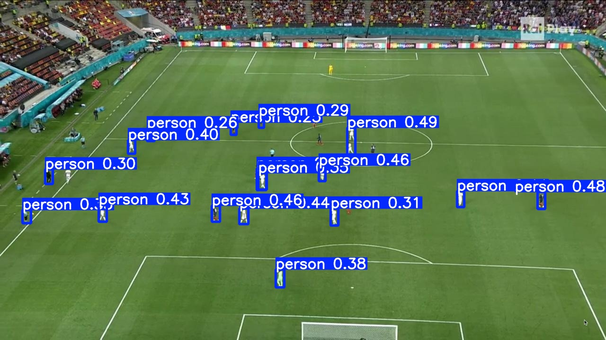
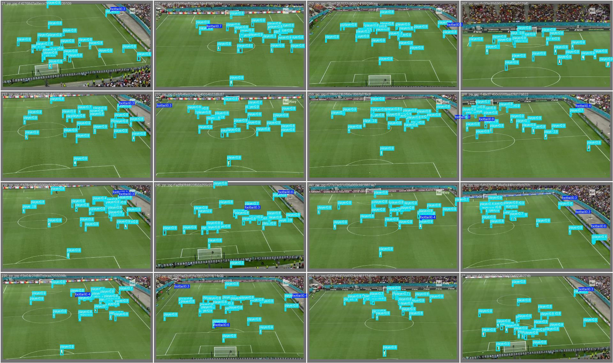
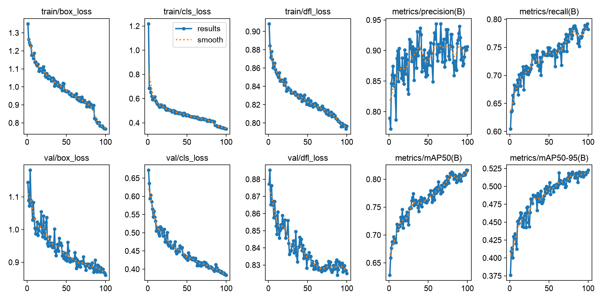
GAN 与扩散模型图像生成
生成DCGAN · DDPM作用：在 MNIST 手写数字上从零实现两种主流生成范式——DCGAN（对抗生成）与 DDPM（去噪扩散），通过同数据集对照理解「判别式博弈」与「逐步去噪」两条技术路线的差异。
实现的功能
- DCGAN：生成器/判别器对抗训练，随机噪声 → 数字图像
- DDPM：前向加噪链可视化 + 反向去噪采样（T=200）
- 逐轮生成样本网格输出（epoch 5 → 30 肉眼可见变清晰）
- 损失曲线记录与两种范式稳定性对比
- UNet 结构（MiniUNet/CondUNet）为后续条件生成打基础
- 冒烟模式
--quick快速验证全流程

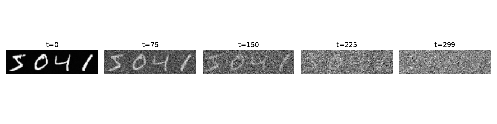
人脸关键点 + 表情识别
回归分类作用：多任务学习代表项目——同一张人脸同时完成「5 点关键点坐标回归」与「表情分类」，为 06 人脸工作台提供核心算法基础。
实现的功能
- CNN 双头网络：关键点头（坐标回归）+ 表情头（分类）
- 逐图动态坐标缩放（数据集图片尺寸不统一的坑已解决）
- NME 关键点误差评估 + 表情混淆矩阵分析
- 预测 vs 真值可视化、误差样本定位
- 损失曲线（回归 L1 + 分类 CE 联合优化）
- 训练权重保存与推理加载
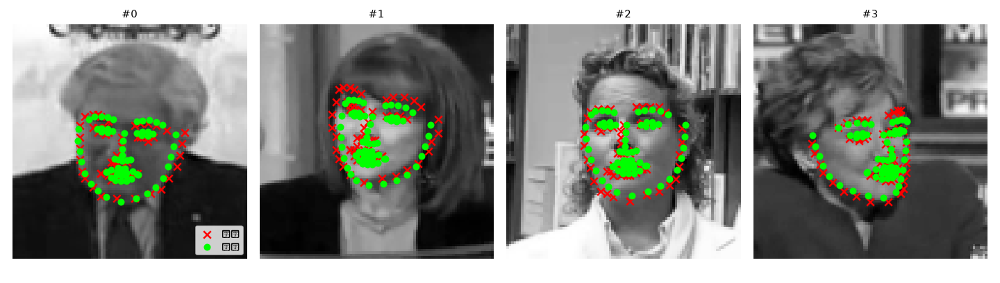
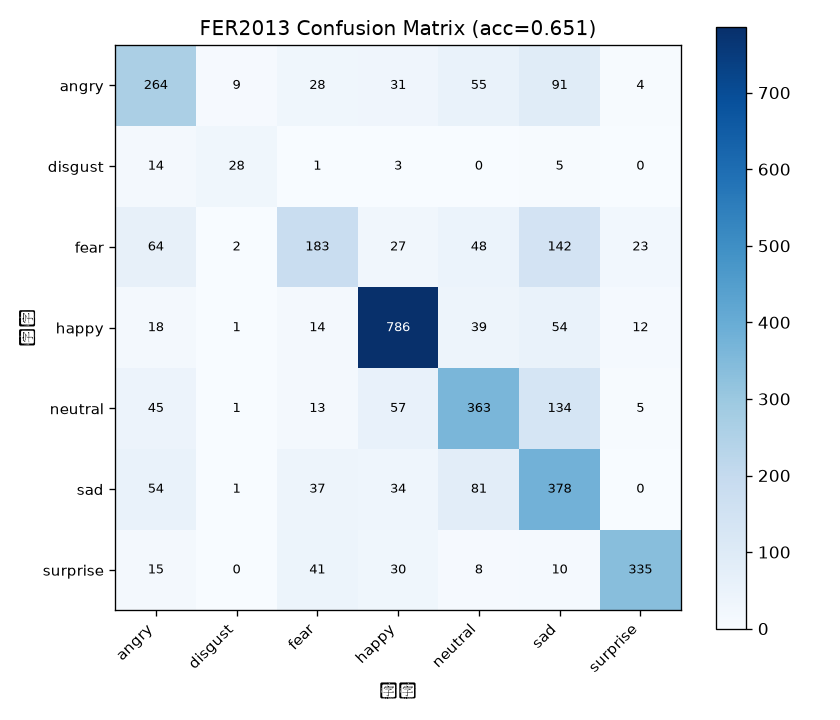
基于深度特征的图像检索
检索ResNet18作用：「以图搜图」——用 ResNet18 提取全局特征向量，以余弦相似度在图库中排序召回相似图片，构建完整「特征提取 → 索引 → 查询 → 评估」检索流水线。
实现的功能
- ResNet18 去分类头批量提特征，L2 归一化存储
- 相似度检索 Top-K 召回与可视化结果网格
- Precision@k / mAP 检索质量评估
- 文件名哈希索引替代全目录遍历（缺失匹配提速）
- 剔除查询图自身匹配，杜绝指标虚高
- 索引持久化（一次构建、多次查询）
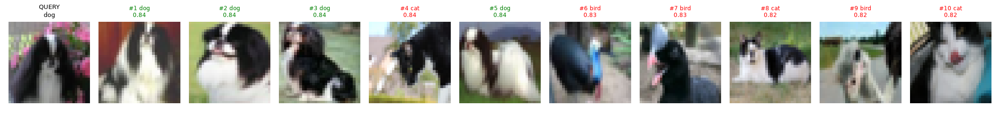
人物轮廓检测（实例分割）
分割YOLOv8-seg作用：识别图像中的行人并绘制精细轮廓掩码，从「框住人」进阶到「描出人」，掌握检测 → 实例分割的能力跃迁。
实现的功能
- YOLOv8 实例分割模型推理与掩码提取
- 三种输出模式：矩形框 / 分割轮廓 / 框+轮廓对比图
- 半透明彩色掩码叠加渲染
- 近景/远景多尺度样例测试
- 批量处理 samples 目录一键出图
- 结果目录按模式归档（box / seg / both）
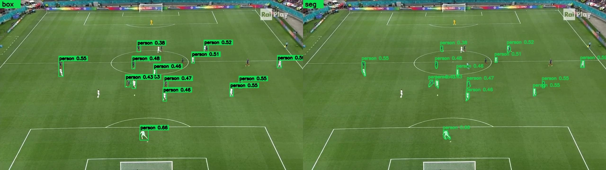
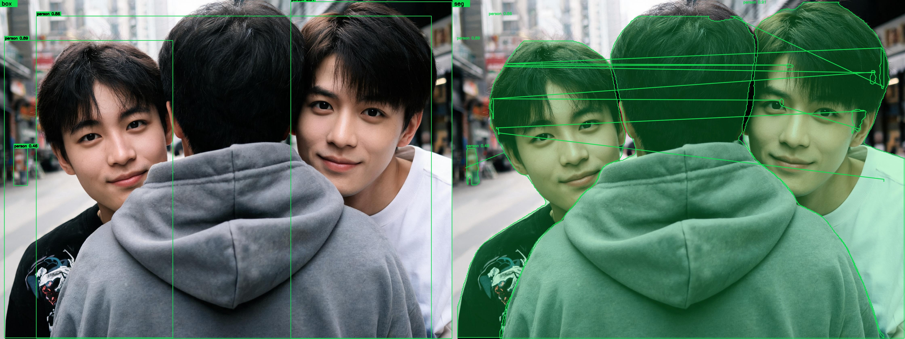
FaceVision 人脸智能分析工作台
Web 应用CPU 推理作用：输入摄像头流或图片，完成「人脸检测 → 身份识别 → 表情分析」全链路推理的 Flask Web 应用——零深度学习框架依赖，纯 OpenCV DNN 跑 ONNX，CPU 即可实时。
实现的功能
- 🎥 摄像头实时识别（前端 Canvas 逐帧画框）
- 🖼 图片上传/拖拽分析，服务端返回标注图
- 📚 人脸库管理（注册/删除/相似度比对）
- 🧠 模型说明页（架构四层可视化讲解）
- Flask 6 个 REST API + 会话统计
- CPU 单帧 ≈ 60ms，显存占用为 0

骑手头盔检测监管系统
检测数据飞轮React 前端作用：识别过路骑电动车/摩托车的人并分辨戴头盔 / 没戴头盔——从单一检测脚本升级为「训练 + 8 个 API + 5 页面 React 前端 + 轨迹跟踪 + 告警引擎 + 数据飞轮」的可演示监管系统，是全系列的集大成项目。
实现的功能
- 🏋 自建 1200 张标注数据集 + YOLOv8s 迁移训练
- 🔄 AIGC 数据飞轮：挖掘易漏样本 → 增强合成 → 重训提升
- 🎯 IoU 多目标轨迹跟踪，稳定未戴盔即抓拍证据事件
- 🔔 三规则告警引擎（违规率/绝对数/突发）+ 全局 Toast
- 📹 图片/批量/视频/摄像头实时四种推理通道
- 📊 React 仪表盘：安全评分、7 天趋势、占比环图
- 📁 历史任务详情弹窗、CSV 导出、参数记忆
- 🖼 原图 vs 标注图左右对比分析视图
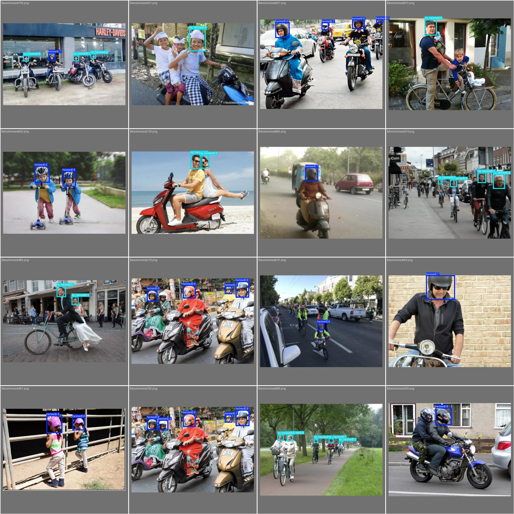
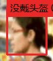
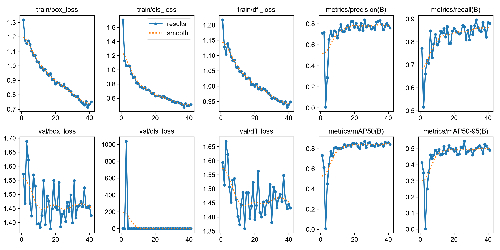
📊七项目横向对比
| 项目 | 任务类型 | 核心技术 | 关键结果 | 形态 |
|---|---|---|---|---|
| 01 足球检测 | 目标检测 | YOLOv8 迁移学习 | mAP50 0.816 | 脚本 + 对照实验 |
| 02 图像生成 | 生成模型 | DCGAN + DDPM | T=200 双范式 | 脚本 + 样本网格 |
| 03 关键点/表情 | 回归 + 分类 | CNN 多任务头 | NME 0.107 / 65.1% | 脚本 + 可视化 |
| 04 图像检索 | 检索排序 | ResNet18 + 余弦相似度 | P@1 74.8% | 脚本 + 索引 |
| 05 人物轮廓 | 实例分割 | YOLOv8-seg | 3 种输出模式 | 脚本 + 批量出图 |
| 06 人脸工作台 | 检测+识别+表情 | OpenCV DNN（CPU） | 60ms/帧 | Flask Web 应用 |
| 07 头盔监管 | 检测 + 跟踪 + 告警 | YOLOv8 + 数据飞轮 | mAP50 0.873 | FastAPI + React |
💡 学习路线设计逻辑：01 学「怎么训练检测器」→ 02 学「怎么生成图像」→ 03 学「多任务回归分类」→ 04 学「特征如何度量相似」→ 05 学「从框到轮廓」→ 06 学「工程化 Web 推理」→ 07 综合「训练 + 系统 + 算法创新（飞轮/跟踪/告警）」，由易到难、逐级递进，全部适配 8GB 消费级显存。